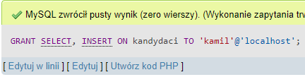
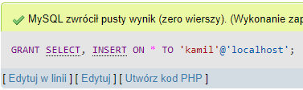

GRANT
Składnia:
GRANT uprawnienia ON tabela1, tabela2 TO 'nazwa_uzytkownika'@'host';Instrukcja GRANT służy do nadawania uprawnień użytkownikowi. Zapytanie wykonujemy z poziomu bazy danych do ktorej chcemy dodac uprawnienia.
Uprawnienia:
- ALL PRIVILEGES - wszystkie możliwe uprawnienia
- SELECT - przeglądnie tabel
- INSERT - dodawania wiersza
- UPDATE - zmienianie danych w wierszu
- DELETE - usuwanie wiersza
- CREATE - tworzenie nowych tabel, baz danych
- ALTER - zmiana struktury tabeli
- DROP - usuwanie tabel, baz danych
Jeżeli chcemy dać uprawnienia do jakiejś tabeli:
Jeżeli chcemy dać uprawnienia do wszystkich tabel łatwiej będzie użyć gwiazdki (*):
